Machine Learning models applied with pipelines.#
import pandas as pd
import numpy as np
import matplotlib.pyplot as plt
import seaborn as sns
import warnings
from sklearn.preprocessing import MinMaxScaler, LabelEncoder, OneHotEncoder, PowerTransformer
from sklearn.model_selection import train_test_split, GridSearchCV
from sklearn.neighbors import KNeighborsRegressor
from sklearn import neighbors
from sklearn.metrics import mean_absolute_error, mean_squared_error, mean_squared_log_error, r2_score, explained_variance_score
import scipy.stats as stats
from scipy.stats import kurtosis, boxcox
import mglearn
import matplotlib
warnings.filterwarnings('ignore')
df = pd.read_csv('C:/Users/elias/OneDrive/Desktop/MachineLearning/MLProject/Copia de DataBaseSGC.csv', delimiter=';', low_memory=False)
"""df = df.sort_values(by="T_0.01_RotD50", ascending=True)
df.reset_index(drop=True, inplace=True)"""
'df = df.sort_values(by="T_0.01_RotD50", ascending=True)\ndf.reset_index(drop=True, inplace=True)'
df.drop(["Record Sequence Number"], axis=1, inplace=True)
df.drop(["Station ID"], axis=1, inplace=True)
df.drop(["Station Code"], axis=1, inplace=True)
df.drop(["Magnitude type"], axis=1, inplace=True)
df.drop(["EQID"], axis=1, inplace=True)
df.drop(["Valor_T1.5"], axis=1, inplace=True)
df.drop(["Tmax"], axis=1, inplace=True)
df.drop(["Epicenter Latitude (deg; positive N)"], axis=1, inplace=True)
df.drop(["Epicenter Longitude (deg; positive E)"], axis=1, inplace=True)
df.drop(["Station Latitude (deg positive N)"], axis=1, inplace=True)
df.drop(["Station Longitude (deg positive E)"], axis=1, inplace=True)
categorical_columns = df.select_dtypes(include=['object']).columns
categorical_columns
Index(['Tectonic environment (Crustal; Inslab; Interface; Stable; Deep; Volcanic; Oceanic_crust)', 'Style-of-Faulting (S; R; N; U)'], dtype='object')
df = df[df['T_0.01_RotD50'] > 0.001]
"""df = df[df['Rhypo_OpenQuake'] < 350]
df = df[df['Magnitude'] > 6]
df["T_0.01_RotD50"]= df["T_0.01_RotD50"]/980
df = df[df['T_0.01_RotD50'] > 0.0001]
df["T_0.01_RotD50"]= df["T_0.01_RotD50"]*980"""
df.reset_index(drop=True, inplace=True)
df_copy = df.copy()
X= df_copy.copy()
df_copy["T_0.01_RotD50"]= np.log(df_copy["T_0.01_RotD50"])
#df_copy["Rjb_OpenQuake"]= np.log(df_copy["Rjb_OpenQuake"])
df_copy.describe().T
| count | mean | std | min | 25% | 50% | 75% | max | |
|---|---|---|---|---|---|---|---|---|
| Hypocenter Depth (km) | 8805.0 | 60.022135 | 62.355457 | 1.000000 | 10.000000 | 20.000000 | 132.000000 | 209.900000 |
| Magnitude | 8805.0 | 4.988240 | 0.676097 | 3.800000 | 4.500000 | 4.900000 | 5.260000 | 7.782200 |
| Nodal Plane 1 Strike (deg) | 8805.0 | 177.691766 | 106.258851 | 2.000000 | 88.000000 | 168.000000 | 265.000000 | 360.000000 |
| Nodal Plane 1 Dip (deg) | 8805.0 | 58.318001 | 23.394911 | 1.000000 | 41.000000 | 65.000000 | 80.000000 | 90.000000 |
| Nodal Plane 1 Rake Angle (deg) | 8805.0 | 13.536059 | 109.974724 | -180.000000 | -69.000000 | 20.000000 | 107.000000 | 180.000000 |
| Nodal Plane 2 Strike (deg) | 8805.0 | 169.468938 | 108.276370 | 0.000000 | 71.000000 | 172.000000 | 258.000000 | 360.000000 |
| Nodal Plane 2 Dip (deg) | 8805.0 | 68.292334 | 16.067991 | 14.000000 | 58.000000 | 69.000000 | 82.000000 | 90.000000 |
| Nodal Plane 2 Rake Angle (deg) | 8805.0 | 18.598637 | 102.788438 | -180.000000 | -50.000000 | 18.000000 | 100.000000 | 177.000000 |
| Fault Plane (1; 2; X) | 8805.0 | 1.440091 | 0.496426 | 1.000000 | 1.000000 | 1.000000 | 2.000000 | 2.000000 |
| Station Elevation (m) | 8805.0 | 1193.155105 | 1108.177413 | 4.000000 | 234.000000 | 780.000000 | 1948.000000 | 4136.000000 |
| Repi_OpenQuake | 8805.0 | 518.488406 | 358.601988 | 2.139510 | 244.717533 | 436.746258 | 718.587010 | 1814.891470 |
| Rjb_OpenQuake | 8805.0 | 515.148262 | 358.451645 | 0.000000 | 241.733413 | 433.654960 | 716.050906 | 1806.111669 |
| Rrup_OpenQuake | 8805.0 | 527.430827 | 348.018572 | 12.535892 | 255.400610 | 440.445747 | 717.227276 | 1804.589468 |
| Rx_OpenQuake | 8805.0 | -5.352980 | 417.741470 | -1630.754422 | -230.148586 | -6.358898 | 217.901759 | 1691.271485 |
| Rhypo_OpenQuake | 8805.0 | 532.691917 | 348.754609 | 15.963300 | 260.275994 | 445.932251 | 722.370277 | 1814.924143 |
| Ry0_OpenQuake | 8805.0 | 349.660601 | 312.912150 | 0.000000 | 109.505325 | 268.698148 | 490.544945 | 1727.496966 |
| T_0.01_RotD50 | 8805.0 | -1.665881 | 2.324452 | -6.411275 | -3.491672 | -1.904242 | 0.008092 | 6.773999 |
Y=X[["T_0.01_RotD50"]].copy()
X.drop(["T_0.01_RotD50"],axis=1, inplace=True)
df_numerico = df_copy.select_dtypes(include=[float, int])
df_copy.drop(["Nodal Plane 1 Rake Angle (deg)"], axis=1, inplace=True)
df_copy.drop(["Nodal Plane 2 Rake Angle (deg)"], axis=1, inplace=True)
df_copy.drop(["Nodal Plane 2 Dip (deg)"], axis=1, inplace=True)
df_copy.drop(["Nodal Plane 2 Strike (deg)"], axis=1, inplace=True)
df_copy.drop(["Rx_OpenQuake"], axis=1, inplace=True)
df_copy.drop(["Ry0_OpenQuake"], axis=1, inplace=True)
df_copy.drop(["Rhypo_OpenQuake"], axis=1, inplace=True)
df_copy.drop(["Rrup_OpenQuake"], axis=1, inplace=True)
df_copy.drop(["Repi_OpenQuake"], axis=1, inplace=True)
# Codificar la variable categórica con OneHotEncoder
X_categorical = df_copy[['Tectonic environment (Crustal; Inslab; Interface; Stable; Deep; Volcanic; Oceanic_crust)']].astype(str)
enc = OneHotEncoder(sparse_output=False)
X_encoded = enc.fit_transform(X_categorical) # Devuelve un array listo para KNN
Y_categorical = df_copy[["Fault Plane (1; 2; X)"]].astype(str)
enc = OneHotEncoder(sparse_output=False)
Y_encoded = enc.fit_transform(Y_categorical)
Z_categorical = df_copy[["Style-of-Faulting (S; R; N; U)"]].astype(str)
enc = OneHotEncoder(sparse_output=False)
Z_encoded = enc.fit_transform(Z_categorical)
"""A_categorical = df_copy[['Topografia']].astype(str)
enc = OneHotEncoder(sparse_output=False)
A_encoded = enc.fit_transform(A_categorical)
B_categorical = df_copy[['Geologia']].astype(str)
enc = OneHotEncoder(sparse_output=False)
B_encoded = enc.fit_transform(B_categorical) """
X_numerical = df_numerico.drop(columns=["T_0.01_RotD50"]).values
# Paso 3: Combinar características numéricas y codificadas
X_final = np.hstack((X_numerical, X_encoded,Y_encoded,Z_encoded#, A_encoded, B_encoded
))
y = df_copy["T_0.01_RotD50"].values
X_train, X_test, y_train, y_test = train_test_split(X_final, y, test_size=0.3, random_state=0)
Pipelines#
from sklearn.pipeline import Pipeline
KNN Neighbors#
from sklearn.neighbors import KNeighborsRegressor
pipeKNN = Pipeline([('scaler', MinMaxScaler()),("knn", KNeighborsRegressor(n_neighbors=5))])
param_gridknn = {
'knn__weights': ['uniform', 'distance'],
#'knn__algorithm': ['auto', 'ball_tree', 'kd_tree', 'brute'],
'knn__metric': ['euclidean', 'manhattan']
}
grid_searchKNN = GridSearchCV(pipeKNN , param_grid=param_gridknn, scoring='r2', cv=5, n_jobs=6)
grid_searchKNN.fit(X_train, y_train)
print("Best cross-validation accuracy: {:.2f}".format(grid_searchKNN.best_score_))
print("Test set score: {:.2f}".format(grid_searchKNN.score(X_test, y_test)))
print("Best parameters: {}".format(grid_searchKNN.best_params_))
Best cross-validation accuracy: 0.62
Test set score: 0.64
Best parameters: {'knn__metric': 'manhattan', 'knn__weights': 'uniform'}
pipeKNNnuevo = Pipeline([('scaler', MinMaxScaler()),
("knn", KNeighborsRegressor(n_neighbors=5,
metric= 'manhattan'))])
pipeKNNnuevo.fit(X_train, y_train)
Pipeline(steps=[('scaler', MinMaxScaler()),
('knn', KNeighborsRegressor(metric='manhattan'))])In a Jupyter environment, please rerun this cell to show the HTML representation or trust the notebook. On GitHub, the HTML representation is unable to render, please try loading this page with nbviewer.org.
Pipeline(steps=[('scaler', MinMaxScaler()),
('knn', KNeighborsRegressor(metric='manhattan'))])MinMaxScaler()
KNeighborsRegressor(metric='manhattan')
print("Train score: {:.2f}".format(pipeKNNnuevo.score(X_train, y_train)))
print("Test score: {:.2f}".format(pipeKNNnuevo.score(X_test, y_test)))
Train score: 0.76
Test score: 0.64
y_pred_knn = pipeKNNnuevo.predict(X_test)
y_pred_knn_todos = pipeKNNnuevo.predict(X_final)
# Ordenar y obtener predicciones correspondientes
orden = np.argsort(y)
y_real_ordenado = y[orden]
y_pred_correspondiente = y_pred_knn_todos[orden]
# Crear una máscara booleana para los puntos que están en y_test
es_test = np.isin(y_real_ordenado, y_test)
plt.figure(figsize=(12, 6))
plt.plot(y_real_ordenado, label='Real (ordenado)', color='black', linewidth=2)
# Puntos de entrenamiento
plt.scatter(np.where(~es_test)[0], y_pred_correspondiente[~es_test],
label='Predicción KNN (Train)', color='blue', s=3, alpha=0.5)
# Puntos de test
plt.scatter(np.where(es_test)[0], y_pred_correspondiente[es_test],
label='Predicción KNN (Test)', color='red', s=3, alpha=0.8)
plt.title('Comparación de valores reales y predichos KNN (resaltando Test)')
plt.xlabel('Observaciones ordenadas')
plt.ylabel('Valor')
plt.legend()
plt.grid(True)
plt.tight_layout()
plt.show()
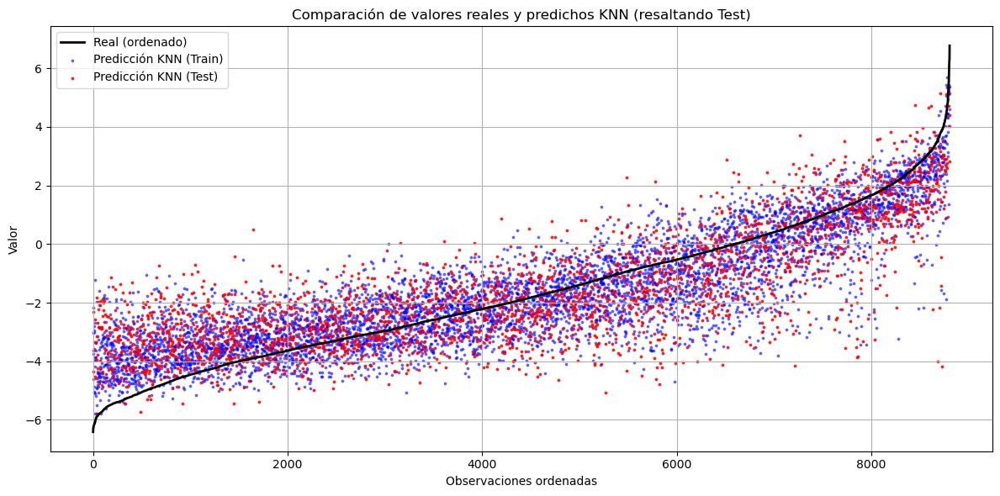
Regresión Lineal#
from sklearn.linear_model import LinearRegression
pipeLINEAL= Pipeline([('scaler', MinMaxScaler()), ("reglineal", LinearRegression())])
pipeLINEAL.fit(X_train, y_train)
Pipeline(steps=[('scaler', MinMaxScaler()), ('reglineal', LinearRegression())])In a Jupyter environment, please rerun this cell to show the HTML representation or trust the notebook. On GitHub, the HTML representation is unable to render, please try loading this page with nbviewer.org.
Pipeline(steps=[('scaler', MinMaxScaler()), ('reglineal', LinearRegression())])MinMaxScaler()
LinearRegression()
print("Train score: {:.2f}".format(pipeLINEAL.score(X_train, y_train)))
print("Test score: {:.2f}".format(pipeLINEAL.score(X_test, y_test)))
Train score: 0.53
Test score: 0.54
y_pred_reglineal = pipeLINEAL.predict(X_test)
y_pred_reglineal_todos = pipeLINEAL.predict(X_final)
# Ordenar y obtener predicciones correspondientes
orden = np.argsort(y)
y_real_ordenado = y[orden]
y_pred_correspondiente = y_pred_reglineal_todos[orden]
# Crear una máscara booleana para los puntos que están en y_test
es_test = np.isin(y_real_ordenado, y_test)
plt.figure(figsize=(12, 6))
plt.plot(y_real_ordenado, label='Real (ordenado)', color='black', linewidth=2)
# Puntos de entrenamiento
plt.scatter(np.where(~es_test)[0], y_pred_correspondiente[~es_test],
label='Predicción Regresión lineal (Train)', color='blue', s=3, alpha=0.5)
# Puntos de test
plt.scatter(np.where(es_test)[0], y_pred_correspondiente[es_test],
label='Predicción Regresión lineal (Test)', color='red', s=3, alpha=0.8)
plt.title('Comparación de valores reales y predichos Regresión lineal (resaltando Test)')
plt.xlabel('Observaciones ordenadas')
plt.ylabel('Valor')
plt.legend()
plt.grid(True)
plt.tight_layout()
plt.show()
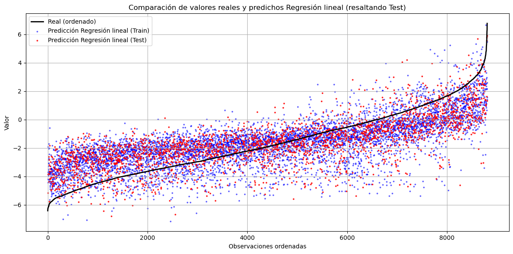
Ridge#
from sklearn.linear_model import Ridge
pipeRIDGE= Pipeline([('scaler', MinMaxScaler()), ("ridge", Ridge())])
param_gridridge = {
'ridge__alpha': [0.01, 0.1, 1, 10, 100, 200, 500], # Regularización
'ridge__solver': ['auto', 'svd', 'cholesky', 'lsqr', 'saga'], # Solvers disponibles
'ridge__tol': [1e-4, 1e-3, 1e-2], # Tolerancia para la convergencia
'ridge__max_iter': [1000, 5000, 10000] # Iteraciones máximas
}
grid_searchRIDGE = GridSearchCV(pipeRIDGE , param_grid=param_gridridge, scoring='r2', cv=5, n_jobs=6)
grid_searchRIDGE.fit(X_train, y_train)
print("Best cross-validation accuracy: {:.2f}".format(grid_searchRIDGE.best_score_))
print("Test set score: {:.2f}".format(grid_searchRIDGE.score(X_test, y_test)))
print("Best parameters: {}".format(grid_searchRIDGE.best_params_))
Best cross-validation accuracy: 0.53
Test set score: 0.54
Best parameters: {'ridge__alpha': 0.01, 'ridge__max_iter': 1000, 'ridge__solver': 'auto', 'ridge__tol': 0.0001}
pipeRIDGEnuevo = Pipeline([('scaler', MinMaxScaler()),
("ridge", Ridge(alpha= 0.01, max_iter= 1000, solver= 'auto', tol= 0.0001))])
pipeRIDGEnuevo.fit(X_train, y_train)
Pipeline(steps=[('scaler', MinMaxScaler()),
('ridge', Ridge(alpha=0.01, max_iter=1000))])In a Jupyter environment, please rerun this cell to show the HTML representation or trust the notebook. On GitHub, the HTML representation is unable to render, please try loading this page with nbviewer.org.
Pipeline(steps=[('scaler', MinMaxScaler()),
('ridge', Ridge(alpha=0.01, max_iter=1000))])MinMaxScaler()
Ridge(alpha=0.01, max_iter=1000)
y_pred_Ridge = pipeRIDGEnuevo.predict(X_test)
y_pred_Ridge_todos = pipeRIDGEnuevo.predict(X_final)
# Ordenar y obtener predicciones correspondientes
orden = np.argsort(y)
y_real_ordenado = y[orden]
y_pred_correspondiente = y_pred_Ridge_todos[orden]
# Crear una máscara booleana para los puntos que están en y_test
es_test = np.isin(y_real_ordenado, y_test)
plt.figure(figsize=(12, 6))
plt.plot(y_real_ordenado, label='Real (ordenado)', color='black', linewidth=2)
# Puntos de entrenamiento
plt.scatter(np.where(~es_test)[0], y_pred_correspondiente[~es_test],
label='Predicción Ridge (Train)', color='blue', s=3, alpha=0.5)
# Puntos de test
plt.scatter(np.where(es_test)[0], y_pred_correspondiente[es_test],
label='Predicción Ridge (Test)', color='red', s=3, alpha=0.8)
plt.title('Comparación de valores reales y predichos Ridge (resaltando Test)')
plt.xlabel('Observaciones ordenadas')
plt.ylabel('Valor')
plt.legend()
plt.grid(True)
plt.tight_layout()
plt.show()
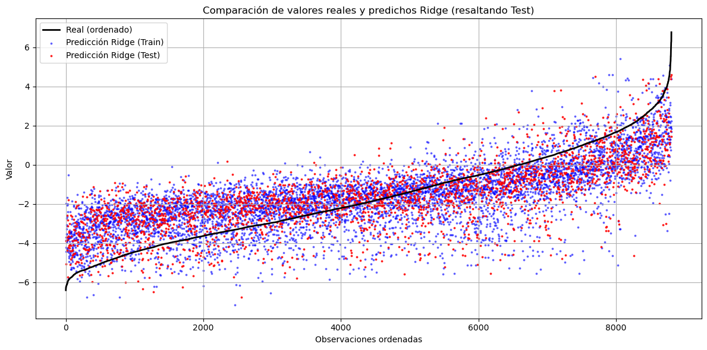
Lasso#
from sklearn.linear_model import Lasso
pipeLASSO= Pipeline([('scaler', MinMaxScaler()), ("lasso", Lasso())])
param_gridlasso = {
'lasso__alpha': [0.0001, 0.001, 0.01, 0.1, 1, 10, 100], # Regularización
'lasso__max_iter': [1000, 5000, 10000], # Iteraciones máximas para converger
'lasso__tol': [1e-4, 1e-3, 1e-2] # Tolerancia de convergencia
}
grid_searchLASSO = GridSearchCV(pipeLASSO , param_grid=param_gridlasso, scoring='neg_root_mean_squared_error', cv=5, n_jobs=6)
grid_searchLASSO.fit(X_train, y_train)
print("Best cross-validation accuracy: {:.2f}".format(grid_searchLASSO.best_score_))
print("Test set score: {:.2f}".format(grid_searchLASSO.score(X_test, y_test)))
print("Best parameters: {}".format(grid_searchLASSO.best_params_))
---------------------------------------------------------------------------
KeyboardInterrupt Traceback (most recent call last)
File ~\anaconda3\envs\ml_subject\lib\site-packages\joblib\parallel.py:1650, in Parallel._get_outputs(self, iterator, pre_dispatch)
1649 with self._backend.retrieval_context():
-> 1650 yield from self._retrieve()
1652 except GeneratorExit:
1653 # The generator has been garbage collected before being fully
1654 # consumed. This aborts the remaining tasks if possible and warn
1655 # the user if necessary.
File ~\anaconda3\envs\ml_subject\lib\site-packages\joblib\parallel.py:1762, in Parallel._retrieve(self)
1759 if ((len(self._jobs) == 0) or
1760 (self._jobs[0].get_status(
1761 timeout=self.timeout) == TASK_PENDING)):
-> 1762 time.sleep(0.01)
1763 continue
KeyboardInterrupt:
During handling of the above exception, another exception occurred:
OSError Traceback (most recent call last)
File ~\anaconda3\envs\ml_subject\lib\site-packages\sklearn\model_selection\_search.py:1024, in BaseSearchCV.fit(self, X, y, **params)
1022 return results
-> 1024 self._run_search(evaluate_candidates)
1026 # multimetric is determined here because in the case of a callable
1027 # self.scoring the return type is only known after calling
File ~\anaconda3\envs\ml_subject\lib\site-packages\sklearn\model_selection\_search.py:1571, in GridSearchCV._run_search(self, evaluate_candidates)
1570 """Search all candidates in param_grid"""
-> 1571 evaluate_candidates(ParameterGrid(self.param_grid))
File ~\anaconda3\envs\ml_subject\lib\site-packages\sklearn\model_selection\_search.py:970, in BaseSearchCV.fit.<locals>.evaluate_candidates(candidate_params, cv, more_results)
963 print(
964 "Fitting {0} folds for each of {1} candidates,"
965 " totalling {2} fits".format(
966 n_splits, n_candidates, n_candidates * n_splits
967 )
968 )
--> 970 out = parallel(
971 delayed(_fit_and_score)(
972 clone(base_estimator),
973 X,
974 y,
975 train=train,
976 test=test,
977 parameters=parameters,
978 split_progress=(split_idx, n_splits),
979 candidate_progress=(cand_idx, n_candidates),
980 **fit_and_score_kwargs,
981 )
982 for (cand_idx, parameters), (split_idx, (train, test)) in product(
983 enumerate(candidate_params),
984 enumerate(cv.split(X, y, **routed_params.splitter.split)),
985 )
986 )
988 if len(out) < 1:
File ~\anaconda3\envs\ml_subject\lib\site-packages\sklearn\utils\parallel.py:77, in Parallel.__call__(self, iterable)
73 iterable_with_config = (
74 (_with_config(delayed_func, config), args, kwargs)
75 for delayed_func, args, kwargs in iterable
76 )
---> 77 return super().__call__(iterable_with_config)
File ~\anaconda3\envs\ml_subject\lib\site-packages\joblib\parallel.py:2007, in Parallel.__call__(self, iterable)
2005 next(output)
-> 2007 return output if self.return_generator else list(output)
File ~\anaconda3\envs\ml_subject\lib\site-packages\joblib\parallel.py:1703, in Parallel._get_outputs(self, iterator, pre_dispatch)
1702 self._exception = True
-> 1703 self._abort()
1704 raise
File ~\anaconda3\envs\ml_subject\lib\site-packages\joblib\parallel.py:1614, in Parallel._abort(self)
1613 ensure_ready = self._managed_backend
-> 1614 backend.abort_everything(ensure_ready=ensure_ready)
1615 self._aborted = True
File ~\anaconda3\envs\ml_subject\lib\site-packages\joblib\_parallel_backends.py:620, in LokyBackend.abort_everything(self, ensure_ready)
618 """Shutdown the workers and restart a new one with the same parameters
619 """
--> 620 self._workers.terminate(kill_workers=True)
621 self._workers = None
File ~\anaconda3\envs\ml_subject\lib\site-packages\joblib\executor.py:87, in MemmappingExecutor.terminate(self, kill_workers)
86 with self._submit_resize_lock:
---> 87 self._temp_folder_manager._clean_temporary_resources(
88 force=kill_workers, allow_non_empty=True
89 )
File ~\anaconda3\envs\ml_subject\lib\site-packages\joblib\_memmapping_reducer.py:615, in TemporaryResourcesManager._clean_temporary_resources(self, context_id, force, allow_non_empty)
614 for context_id in list(self._cached_temp_folders):
--> 615 self._clean_temporary_resources(
616 context_id, force=force, allow_non_empty=allow_non_empty
617 )
618 else:
File ~\anaconda3\envs\ml_subject\lib\site-packages\joblib\_memmapping_reducer.py:626, in TemporaryResourcesManager._clean_temporary_resources(self, context_id, force, allow_non_empty)
622 if force:
623 # Some workers have failed and the ref counted might
624 # be off. The workers should have shut down by this
625 # time so forcefully clean up the files.
--> 626 resource_tracker.unregister(
627 os.path.join(temp_folder, filename), "file"
628 )
629 else:
File ~\anaconda3\envs\ml_subject\lib\site-packages\joblib\externals\loky\backend\resource_tracker.py:183, in ResourceTracker.unregister(self, name, rtype)
182 """Unregister a named resource with resource tracker."""
--> 183 self.ensure_running()
184 self._send("UNREGISTER", name, rtype)
File ~\anaconda3\envs\ml_subject\lib\site-packages\joblib\externals\loky\backend\resource_tracker.py:95, in ResourceTracker.ensure_running(self)
93 if self._fd is not None:
94 # resource tracker was launched before, is it still running?
---> 95 if self._check_alive():
96 # => still alive
97 return
File ~\anaconda3\envs\ml_subject\lib\site-packages\joblib\externals\loky\backend\resource_tracker.py:170, in ResourceTracker._check_alive(self)
169 try:
--> 170 self._send("PROBE", "", "")
171 except BrokenPipeError:
File ~\anaconda3\envs\ml_subject\lib\site-packages\joblib\externals\loky\backend\resource_tracker.py:197, in ResourceTracker._send(self, cmd, name, rtype)
196 msg = f"{cmd}:{name}:{rtype}\n".encode("ascii")
--> 197 nbytes = os.write(self._fd, msg)
198 assert nbytes == len(msg)
OSError: [Errno 22] Invalid argument
During handling of the above exception, another exception occurred:
OSError Traceback (most recent call last)
Cell In[41], line 2
1 grid_searchLASSO = GridSearchCV(pipeLASSO , param_grid=param_gridlasso, scoring='neg_root_mean_squared_error', cv=5, n_jobs=6)
----> 2 grid_searchLASSO.fit(X_train, y_train)
3 print("Best cross-validation accuracy: {:.2f}".format(grid_searchLASSO.best_score_))
4 print("Test set score: {:.2f}".format(grid_searchLASSO.score(X_test, y_test)))
File ~\anaconda3\envs\ml_subject\lib\site-packages\sklearn\base.py:1389, in _fit_context.<locals>.decorator.<locals>.wrapper(estimator, *args, **kwargs)
1382 estimator._validate_params()
1384 with config_context(
1385 skip_parameter_validation=(
1386 prefer_skip_nested_validation or global_skip_validation
1387 )
1388 ):
-> 1389 return fit_method(estimator, *args, **kwargs)
File ~\anaconda3\envs\ml_subject\lib\site-packages\sklearn\model_selection\_search.py:1034, in BaseSearchCV.fit(self, X, y, **params)
1032 if callable(self.scoring) and self.multimetric_:
1033 self._check_refit_for_multimetric(first_test_score)
-> 1034 refit_metric = self.refit
1036 # For multi-metric evaluation, store the best_index_, best_params_ and
1037 # best_score_ iff refit is one of the scorer names
1038 # In single metric evaluation, refit_metric is "score"
1039 if self.refit or not self.multimetric_:
File ~\anaconda3\envs\ml_subject\lib\site-packages\joblib\parallel.py:1354, in Parallel.__exit__(self, exc_type, exc_value, traceback)
1352 if self.return_generator and self._calling:
1353 self._abort()
-> 1354 self._terminate_and_reset()
File ~\anaconda3\envs\ml_subject\lib\site-packages\joblib\parallel.py:1386, in Parallel._terminate_and_reset(self)
1384 self._calling = False
1385 if not self._managed_backend:
-> 1386 self._backend.terminate()
File ~\anaconda3\envs\ml_subject\lib\site-packages\joblib\_parallel_backends.py:610, in LokyBackend.terminate(self)
605 def terminate(self):
606 if self._workers is not None:
607 # Don't terminate the workers as we want to reuse them in later
608 # calls, but cleanup the temporary resources that the Parallel call
609 # created. This 'hack' requires a private, low-level operation.
--> 610 self._workers._temp_folder_manager._clean_temporary_resources(
611 context_id=self.parallel._id, force=False
612 )
613 self._workers = None
615 self.reset_batch_stats()
File ~\anaconda3\envs\ml_subject\lib\site-packages\joblib\_memmapping_reducer.py:630, in TemporaryResourcesManager._clean_temporary_resources(self, context_id, force, allow_non_empty)
626 resource_tracker.unregister(
627 os.path.join(temp_folder, filename), "file"
628 )
629 else:
--> 630 resource_tracker.maybe_unlink(
631 os.path.join(temp_folder, filename), "file"
632 )
634 # When forcing clean-up, try to delete the folder even if some
635 # files are still in it. Otherwise, try to delete the folder
636 allow_non_empty |= force
File ~\anaconda3\envs\ml_subject\lib\site-packages\joblib\externals\loky\backend\resource_tracker.py:188, in ResourceTracker.maybe_unlink(self, name, rtype)
186 def maybe_unlink(self, name, rtype):
187 """Decrement the refcount of a resource, and delete it if it hits 0"""
--> 188 self.ensure_running()
189 self._send("MAYBE_UNLINK", name, rtype)
File ~\anaconda3\envs\ml_subject\lib\site-packages\joblib\externals\loky\backend\resource_tracker.py:95, in ResourceTracker.ensure_running(self)
92 with self._lock:
93 if self._fd is not None:
94 # resource tracker was launched before, is it still running?
---> 95 if self._check_alive():
96 # => still alive
97 return
98 # => dead, launch it again
File ~\anaconda3\envs\ml_subject\lib\site-packages\joblib\externals\loky\backend\resource_tracker.py:170, in ResourceTracker._check_alive(self)
168 """Check for the existence of the resource tracker process."""
169 try:
--> 170 self._send("PROBE", "", "")
171 except BrokenPipeError:
172 return False
File ~\anaconda3\envs\ml_subject\lib\site-packages\joblib\externals\loky\backend\resource_tracker.py:197, in ResourceTracker._send(self, cmd, name, rtype)
195 raise ValueError("name too long")
196 msg = f"{cmd}:{name}:{rtype}\n".encode("ascii")
--> 197 nbytes = os.write(self._fd, msg)
198 assert nbytes == len(msg)
OSError: [Errno 22] Invalid argument
pipeLASSOnuevo = Pipeline([('scaler', MinMaxScaler()),
("lasso", Lasso(alpha= 0.0001, max_iter=10000, tol= 0.0001))])
pipeLASSOnuevo.fit(X_train, y_train)
Pipeline(steps=[('scaler', MinMaxScaler()),
('lasso', Lasso(alpha=0.0001, max_iter=10000))])In a Jupyter environment, please rerun this cell to show the HTML representation or trust the notebook. On GitHub, the HTML representation is unable to render, please try loading this page with nbviewer.org.
Pipeline(steps=[('scaler', MinMaxScaler()),
('lasso', Lasso(alpha=0.0001, max_iter=10000))])MinMaxScaler()
Lasso(alpha=0.0001, max_iter=10000)
y_pred_Lasso = pipeLASSOnuevo.predict(X_test)
y_pred_Lasso_todos = pipeLASSOnuevo.predict(X_final)
# Ordenar y obtener predicciones correspondientes
orden = np.argsort(y)
y_real_ordenado = y[orden]
y_pred_correspondiente = y_pred_Lasso_todos[orden]
# Crear una máscara booleana para los puntos que están en y_test
es_test = np.isin(y_real_ordenado, y_test)
plt.figure(figsize=(12, 6))
plt.plot(y_real_ordenado, label='Real (ordenado)', color='black', linewidth=2)
# Puntos de entrenamiento
plt.scatter(np.where(~es_test)[0], y_pred_correspondiente[~es_test],
label='Predicción Lasso (Train)', color='blue', s=3, alpha=0.5)
# Puntos de test
plt.scatter(np.where(es_test)[0], y_pred_correspondiente[es_test],
label='Predicción Lasso (Test)', color='red', s=3, alpha=0.8)
plt.title('Comparación de valores reales y predichos Lasso (resaltando Test)')
plt.xlabel('Observaciones ordenadas')
plt.ylabel('Valor')
plt.legend()
plt.grid(True)
plt.tight_layout()
plt.show()
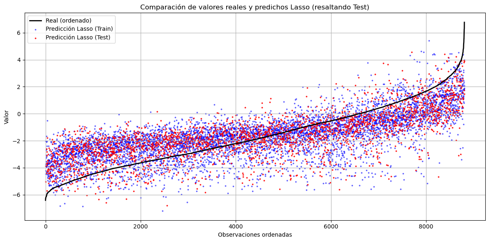
Random Forest#
from sklearn.ensemble import RandomForestRegressor
pipeRF= Pipeline([ ("rf", RandomForestRegressor())])
param_gridRF = {
'rf__n_estimators': [200,300],
'rf__max_depth': [10,20,30],
'rf__min_samples_split': [2, 5, 10],
'rf__min_samples_leaf': [1, 2, 4],
}
grid_searchRF = GridSearchCV(pipeRF, param_grid=param_gridRF, scoring='neg_root_mean_squared_error', cv=5, n_jobs=-1)
grid_searchRF.fit(X_train, y_train)
print("Best cross-validation accuracy: {:.2f}".format(-grid_searchRF.best_score_))
print("Test set score: {:.2f}".format(-grid_searchRF.score(X_test, y_test)))
print("Best parameters: {}".format(grid_searchRF.best_params_))
Best cross-validation accuracy: 1.02
Test set score: 1.03
Best parameters: {'rf__max_depth': 30, 'rf__min_samples_leaf': 1, 'rf__min_samples_split': 2, 'rf__n_estimators': 300}
print("Best cross-validation accuracy: 1.09")
print("Test set score: 1.04")
print("Best parameters: {'rf__max_depth': 30, 'rf__min_samples_leaf': 1, 'rf__min_samples_split': 5, 'rf__n_estimators': 300}")
Best cross-validation accuracy: 1.09
Test set score: 1.04
Best parameters: {'rf__max_depth': 30, 'rf__min_samples_leaf': 1, 'rf__min_samples_split': 5, 'rf__n_estimators': 300}
pipeRFnuevo = Pipeline([('rf', RandomForestRegressor(n_estimators=200,max_depth=20,min_samples_split=2,
criterion='squared_error',min_samples_leaf =2
, n_jobs=-1))])
pipeRFnuevo.fit(X_train, y_train)
Pipeline(steps=[('rf',
RandomForestRegressor(max_depth=20, min_samples_leaf=2,
n_estimators=200, n_jobs=-1))])In a Jupyter environment, please rerun this cell to show the HTML representation or trust the notebook. On GitHub, the HTML representation is unable to render, please try loading this page with nbviewer.org.
Pipeline(steps=[('rf',
RandomForestRegressor(max_depth=20, min_samples_leaf=2,
n_estimators=200, n_jobs=-1))])RandomForestRegressor(max_depth=20, min_samples_leaf=2, n_estimators=200,
n_jobs=-1)print("Train score: {:.2f}".format(pipeRFnuevo.score(X_train, y_train)))
print("Test score: {:.2f}".format(pipeRFnuevo.score(X_test, y_test)))
Train score: 0.96
Test score: 0.81
y_pred_RAND = pipeRFnuevo.predict(X_test)
y_pred_RAND_todos = pipeRFnuevo.predict(X_final)
# Ordenar y obtener predicciones correspondientes
orden = np.argsort(y)
y_real_ordenado = y[orden]
y_pred_correspondiente = y_pred_RAND_todos[orden]
# Crear una máscara booleana para los puntos que están en y_test
es_test = np.isin(y_real_ordenado, y_test)
plt.figure(figsize=(12, 6))
plt.plot(y_real_ordenado, label='Real (ordenado)', color='black', linewidth=2)
# Puntos de entrenamiento
plt.scatter(np.where(~es_test)[0], y_pred_correspondiente[~es_test],
label='Predicción Random Forest (Train)', color='blue', s=3, alpha=0.5)
# Puntos de test
plt.scatter(np.where(es_test)[0], y_pred_correspondiente[es_test],
label='Predicción Random Forest (Test)', color='red', s=3, alpha=0.8)
plt.title('Comparación de valores reales y predichos Random Forest (resaltando Test)')
plt.xlabel('Observaciones ordenadas')
plt.ylabel('Valor')
plt.legend()
plt.grid(True)
plt.tight_layout()
plt.show()
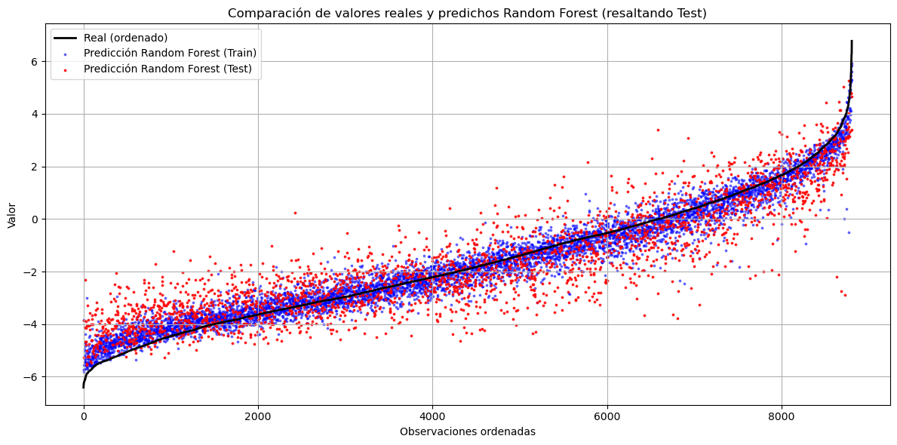
XGBoost#
import xgboost as xgb
from xgboost import XGBRegressor
print(xgb.build_info())
print(xgb.__version__)
{'BUILTIN_PREFETCH_PRESENT': False, 'CUDA_VERSION': [12, 4], 'DEBUG': False, 'MM_PREFETCH_PRESENT': True, 'THRUST_VERSION': [2, 3, 2], 'USE_CUDA': True, 'USE_DLOPEN_NCCL': False, 'USE_FEDERATED': False, 'USE_NCCL': False, 'USE_OPENMP': True, 'USE_RMM': False, 'libxgboost': 'C:\\Users\\elias\\AppData\\Roaming\\Python\\Python39\\site-packages\\xgboost\\lib\\xgboost.dll'}
2.1.4
pipeXGB= Pipeline([ ("xgb", XGBRegressor(tree_method="gpu_hist", gpu_id=1))])
param_gridXGB = {
'xgb__max_depth': [5,6],
'xgb__min_child_weight': [1, 5,10],
'xgb__subsample': [0.7, 1],
'xgb__colsample_bytree': [0.7, 1],
'xgb__learning_rate': [0.1, 0.2],
'xgb__n_estimators': [100,200],
'xgb__reg_lambda': [0,1, 10],
'xgb__reg_alpha': [0,1 ,10]
}
grid_searchXGB = GridSearchCV(pipeXGB, param_grid=param_gridXGB, scoring='neg_root_mean_squared_error', cv=5, n_jobs=-1)
grid_searchXGB.fit(X_train, y_train)
print("Best cross-validation accuracy: {:.2f}".format(-grid_searchXGB.best_score_))
print("Test set score: {:.2f}".format(-grid_searchXGB.score(X_test, y_test)))
print("Best parameters: {}".format(grid_searchXGB.best_params_))
Best cross-validation accuracy: 0.90
Test set score: 0.91
Best parameters: {'xgb__colsample_bytree': 0.7, 'xgb__learning_rate': 0.1, 'xgb__max_depth': 6, 'xgb__min_child_weight': 1, 'xgb__n_estimators': 200, 'xgb__reg_alpha': 1, 'xgb__reg_lambda': 1, 'xgb__subsample': 1}
print("Best cross-validation RMSE: 0.98")
print("Test set score: 0.91")
print("Best parameters: {'xgb__colsample_bytree': 0.7, 'xgb__learning_rate': 0.1, 'xgb__max_depth': 6, 'xgb__min_child_weight': 5, 'xgb__n_estimators': 200, 'xgb__reg_alpha': 1, 'xgb__reg_lambda': 0, 'xgb__subsample': 1}")
Best cross-validation RMSE: 0.98
Test set score: 0.91
Best parameters: {'xgb__colsample_bytree': 0.7, 'xgb__learning_rate': 0.1, 'xgb__max_depth': 6, 'xgb__min_child_weight': 5, 'xgb__n_estimators': 200, 'xgb__reg_alpha': 1, 'xgb__reg_lambda': 0, 'xgb__subsample': 1}
pipeXGBnuevo = Pipeline([('xgb', XGBRegressor(colsample_bytree= 0.7,
learning_rate= 0.1,
max_depth=6,
min_child_weight=5,
n_estimators= 200,
reg_alpha= 1,
reg_lambda= 0,
subsample= 1))])
pipeXGBnuevo.fit(X_train, y_train)
Pipeline(steps=[('xgb',
XGBRegressor(base_score=None, booster=None, callbacks=None,
colsample_bylevel=None, colsample_bynode=None,
colsample_bytree=0.7, device=None,
early_stopping_rounds=None,
enable_categorical=False, eval_metric=None,
feature_types=None, gamma=None, grow_policy=None,
importance_type=None,
interaction_constraints=None, learning_rate=0.1,
max_bin=None, max_cat_threshold=None,
max_cat_to_onehot=None, max_delta_step=None,
max_depth=6, max_leaves=None, min_child_weight=5,
missing=nan, monotone_constraints=None,
multi_strategy=None, n_estimators=200,
n_jobs=None, num_parallel_tree=None,
random_state=None, ...))])In a Jupyter environment, please rerun this cell to show the HTML representation or trust the notebook. On GitHub, the HTML representation is unable to render, please try loading this page with nbviewer.org.
Pipeline(steps=[('xgb',
XGBRegressor(base_score=None, booster=None, callbacks=None,
colsample_bylevel=None, colsample_bynode=None,
colsample_bytree=0.7, device=None,
early_stopping_rounds=None,
enable_categorical=False, eval_metric=None,
feature_types=None, gamma=None, grow_policy=None,
importance_type=None,
interaction_constraints=None, learning_rate=0.1,
max_bin=None, max_cat_threshold=None,
max_cat_to_onehot=None, max_delta_step=None,
max_depth=6, max_leaves=None, min_child_weight=5,
missing=nan, monotone_constraints=None,
multi_strategy=None, n_estimators=200,
n_jobs=None, num_parallel_tree=None,
random_state=None, ...))])XGBRegressor(base_score=None, booster=None, callbacks=None,
colsample_bylevel=None, colsample_bynode=None,
colsample_bytree=0.7, device=None, early_stopping_rounds=None,
enable_categorical=False, eval_metric=None, feature_types=None,
gamma=None, grow_policy=None, importance_type=None,
interaction_constraints=None, learning_rate=0.1, max_bin=None,
max_cat_threshold=None, max_cat_to_onehot=None,
max_delta_step=None, max_depth=6, max_leaves=None,
min_child_weight=5, missing=nan, monotone_constraints=None,
multi_strategy=None, n_estimators=200, n_jobs=None,
num_parallel_tree=None, random_state=None, ...)print("Train score: {:.2f}".format(pipeXGBnuevo.score(X_train, y_train)))
print("Test score: {:.2f}".format(pipeXGBnuevo.score(X_test, y_test)))
Train score: 0.94
Test score: 0.85
y_pred_XGB = pipeXGBnuevo.predict(X_test)
y_pred_XGB_todos = pipeXGBnuevo.predict(X_final)
# Ordenar y obtener predicciones correspondientes
orden = np.argsort(y)
y_real_ordenado = y[orden]
y_pred_correspondiente = y_pred_XGB_todos[orden]
# Crear una máscara booleana para los puntos que están en y_test
es_test = np.isin(y_real_ordenado, y_test)
plt.figure(figsize=(12, 6))
plt.plot(y_real_ordenado, label='Real (ordenado)', color='black', linewidth=2)
# Puntos de entrenamiento
plt.scatter(np.where(~es_test)[0], y_pred_correspondiente[~es_test],
label='Predicción XGBoost (Train)', color='blue', s=3, alpha=0.5)
# Puntos de test
plt.scatter(np.where(es_test)[0], y_pred_correspondiente[es_test],
label='Predicción XGBoost (Test)', color='red', s=3, alpha=0.8)
plt.title('Comparación de valores reales y predichos XGBoost (resaltando Test)')
plt.xlabel('Observaciones ordenadas')
plt.ylabel('Valor')
plt.legend()
plt.grid(True)
plt.tight_layout()
plt.show()
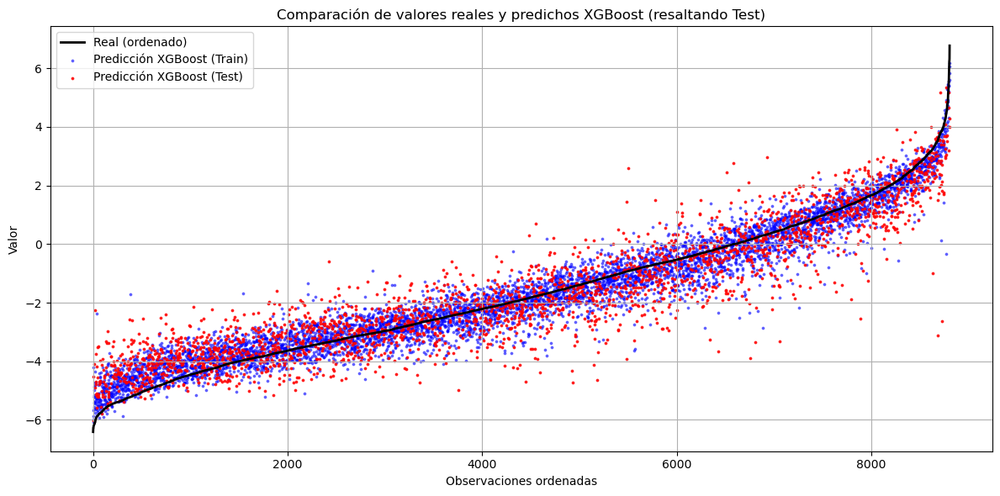
X_XGB=df_copy.copy()
X_XGB[categorical_columns] = X_XGB[categorical_columns].astype('category')
X_XGB.drop(["T_0.01_RotD50"],axis=1, inplace=True)
X_trainXGB, X_testXGB, y_trainXGB, y_testXGB = train_test_split(X_XGB, df_copy["T_0.01_RotD50"], test_size=0.3, random_state=0)
f_importance = XGBRegressor(colsample_bytree= 0.7,learning_rate= 0.1,max_depth=6,min_child_weight=5,n_estimators= 200,reg_alpha= 1,reg_lambda= 0,subsample= 1, enable_categorical=True)
f_importance.fit(X_trainXGB, y_trainXGB)
XGBRegressor(base_score=None, booster=None, callbacks=None,
colsample_bylevel=None, colsample_bynode=None,
colsample_bytree=0.7, device=None, early_stopping_rounds=None,
enable_categorical=True, eval_metric=None, feature_types=None,
gamma=None, grow_policy=None, importance_type=None,
interaction_constraints=None, learning_rate=0.1, max_bin=None,
max_cat_threshold=None, max_cat_to_onehot=None,
max_delta_step=None, max_depth=6, max_leaves=None,
min_child_weight=5, missing=nan, monotone_constraints=None,
multi_strategy=None, n_estimators=200, n_jobs=None,
num_parallel_tree=None, random_state=None, ...)In a Jupyter environment, please rerun this cell to show the HTML representation or trust the notebook. On GitHub, the HTML representation is unable to render, please try loading this page with nbviewer.org.
XGBRegressor(base_score=None, booster=None, callbacks=None,
colsample_bylevel=None, colsample_bynode=None,
colsample_bytree=0.7, device=None, early_stopping_rounds=None,
enable_categorical=True, eval_metric=None, feature_types=None,
gamma=None, grow_policy=None, importance_type=None,
interaction_constraints=None, learning_rate=0.1, max_bin=None,
max_cat_threshold=None, max_cat_to_onehot=None,
max_delta_step=None, max_depth=6, max_leaves=None,
min_child_weight=5, missing=nan, monotone_constraints=None,
multi_strategy=None, n_estimators=200, n_jobs=None,
num_parallel_tree=None, random_state=None, ...)xgb.plot_importance(f_importance)
plt.show()
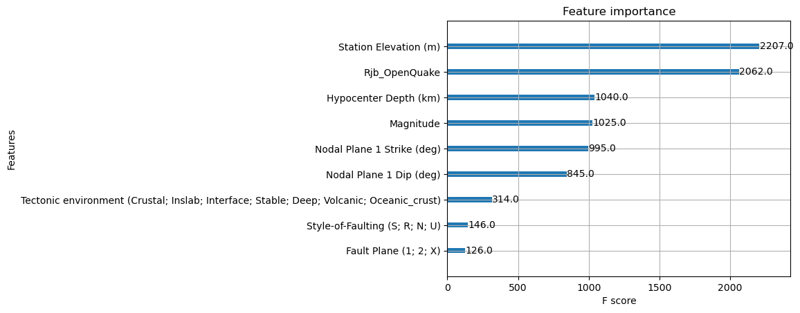
SVM#
from sklearn.svm import SVR
pipeSVM = Pipeline([("scaler", MinMaxScaler()), ("svm", SVR(kernel ='rbf', shrinking = True))])
param_gridSVM = {'svm__C': [0.001, 0.01, 0.1, 1, 10, 100],
'svm__gamma': [0.001, 0.01, 0.1, 1, 10, 100],
'svm__epsilon': [0.001, 0.01, 0.1, 0.5, 1.0],
}
grid_searchSVM = GridSearchCV(pipeSVM, param_grid=param_gridSVM, scoring='neg_root_mean_squared_error', cv=5, n_jobs=6)
grid_searchSVM.fit(X_train, y_train)
print("Best cross-validation accuracy: {:.2f}".format(-grid_searchSVM.best_score_))
print("Test set score: {:.2f}".format(-grid_searchSVM.score(X_test, y_test)))
print("Best parameters: {}".format(grid_searchSVM.best_params_))
Best cross-validation accuracy: 1.32
Test set score: 1.35
Best parameters: {'svm__C': 100, 'svm__epsilon': 0.5, 'svm__gamma': 0.1}
pipeSVMnuevo = Pipeline([('scaler', MinMaxScaler()),('svm', SVR(C=100,gamma=0.1,epsilon=0.5 ,kernel='rbf',shrinking=True))])
pipeSVMnuevo.fit(X_train, y_train)
Pipeline(steps=[('scaler', MinMaxScaler()),
('svm', SVR(C=100, epsilon=0.5, gamma=0.1))])In a Jupyter environment, please rerun this cell to show the HTML representation or trust the notebook. On GitHub, the HTML representation is unable to render, please try loading this page with nbviewer.org.
Pipeline(steps=[('scaler', MinMaxScaler()),
('svm', SVR(C=100, epsilon=0.5, gamma=0.1))])MinMaxScaler()
SVR(C=100, epsilon=0.5, gamma=0.1)
print("Train score: {:.2f}".format(pipeSVMnuevo.score(X_train, y_train)))
print("Test score: {:.2f}".format(pipeSVMnuevo.score(X_test, y_test)))
Train score: 0.70
Test score: 0.68
y_pred_SVM = pipeSVMnuevo.predict(X_test)
y_pred_SVM_todos = pipeSVMnuevo.predict(X_final)
# Ordenar y obtener predicciones correspondientes
orden = np.argsort(y)
y_real_ordenado = y[orden]
y_pred_correspondiente = y_pred_SVM_todos[orden]
# Crear una máscara booleana para los puntos que están en y_test
es_test = np.isin(y_real_ordenado, y_test)
plt.figure(figsize=(12, 6))
plt.plot(y_real_ordenado, label='Real (ordenado)', color='black', linewidth=2)
# Puntos de entrenamiento
plt.scatter(np.where(~es_test)[0], y_pred_correspondiente[~es_test],
label='Predicción SVM (Train)', color='blue', s=3, alpha=0.5)
# Puntos de test
plt.scatter(np.where(es_test)[0], y_pred_correspondiente[es_test],
label='Predicción SVM (Test)', color='red', s=3, alpha=0.8)
plt.title('Comparación de valores reales y predichos SVM (resaltando Test)')
plt.xlabel('Observaciones ordenadas')
plt.ylabel('Valor')
plt.legend()
plt.grid(True)
plt.tight_layout()
plt.show()
Meta Stacking#
from sklearn.ensemble import StackingRegressor
meta_model = LinearRegression()
stack = StackingRegressor(
estimators=[], # por defecto, pero se cambiará con el grid
final_estimator=meta_model,
passthrough=False,
n_jobs=-1
)
param_grid_Stacking = {
'estimators': [
[('xgb', pipeXGBnuevo), ('svm', pipeSVMnuevo), ('knn', pipeKNNnuevo), ('rf', pipeRFnuevo) ],
[('xgb', pipeXGBnuevo), ('svm', pipeSVMnuevo), ('knn', pipeKNNnuevo)],
[('xgb', pipeXGBnuevo), ('rf', pipeRFnuevo), ('knn', pipeKNNnuevo)],
[('xgb', pipeXGBnuevo), ('svm', pipeSVMnuevo), ('reg', pipeLINEAL)],
[('svm', pipeSVMnuevo), ('knn', pipeKNNnuevo), ('reg', pipeLINEAL)],
[('xgb', pipeXGBnuevo), ('rf', pipeRFnuevo), ('reg', pipeLINEAL)],
[('svm', pipeSVMnuevo), ('rf', pipeRFnuevo), ('reg', pipeLINEAL)],
[('xgb', pipeXGBnuevo), ('rf', pipeRFnuevo)],
[('xgb', pipeXGBnuevo), ('reg', pipeLINEAL)],
[('svm', pipeSVMnuevo), ('reg', pipeLINEAL)]
]}
grid_searchStacking = GridSearchCV(estimator=stack,param_grid=param_grid_Stacking,cv=5,scoring='neg_root_mean_squared_error',n_jobs=-1)
grid_searchStacking.fit(X_train, y_train)
GridSearchCV(cv=5,
estimator=StackingRegressor(estimators=[],
final_estimator=LinearRegression(),
n_jobs=-1),
n_jobs=-1,
param_grid={'estimators': [[('xgb',
Pipeline(steps=[('xgb',
XGBRegressor(base_score=None,
booster=None,
callbacks=None,
colsample_bylevel=None,
colsample_bynode=None,
colsample_bytree=0.7,
device=None,
early_stopping_rounds=None,
enable_categori...
num_parallel_tree=None,
random_state=None, ...))])),
('reg',
Pipeline(steps=[('scaler',
MinMaxScaler()),
('reglineal',
LinearRegression())]))],
[('svm',
Pipeline(steps=[('scaler',
MinMaxScaler()),
('svm',
SVR(C=100,
epsilon=0.5,
gamma=0.1))])),
('reg',
Pipeline(steps=[('scaler',
MinMaxScaler()),
('reglineal',
LinearRegression())]))]]},
scoring='neg_root_mean_squared_error')In a Jupyter environment, please rerun this cell to show the HTML representation or trust the notebook. On GitHub, the HTML representation is unable to render, please try loading this page with nbviewer.org.
GridSearchCV(cv=5,
estimator=StackingRegressor(estimators=[],
final_estimator=LinearRegression(),
n_jobs=-1),
n_jobs=-1,
param_grid={'estimators': [[('xgb',
Pipeline(steps=[('xgb',
XGBRegressor(base_score=None,
booster=None,
callbacks=None,
colsample_bylevel=None,
colsample_bynode=None,
colsample_bytree=0.7,
device=None,
early_stopping_rounds=None,
enable_categori...
num_parallel_tree=None,
random_state=None, ...))])),
('reg',
Pipeline(steps=[('scaler',
MinMaxScaler()),
('reglineal',
LinearRegression())]))],
[('svm',
Pipeline(steps=[('scaler',
MinMaxScaler()),
('svm',
SVR(C=100,
epsilon=0.5,
gamma=0.1))])),
('reg',
Pipeline(steps=[('scaler',
MinMaxScaler()),
('reglineal',
LinearRegression())]))]]},
scoring='neg_root_mean_squared_error')StackingRegressor(estimators=[('xgb',
Pipeline(steps=[('xgb',
XGBRegressor(base_score=None,
booster=None,
callbacks=None,
colsample_bylevel=None,
colsample_bynode=None,
colsample_bytree=0.7,
device=None,
early_stopping_rounds=None,
enable_categorical=False,
eval_metric=None,
feature_types=None,
gamma=None,
grow_policy=None,
importance_type=None,
interaction_constr...
('svm',
Pipeline(steps=[('scaler', MinMaxScaler()),
('svm',
SVR(C=100, epsilon=0.5,
gamma=0.1))])),
('knn',
Pipeline(steps=[('scaler', MinMaxScaler()),
('knn',
KNeighborsRegressor(metric='manhattan'))])),
('rf',
Pipeline(steps=[('rf',
RandomForestRegressor(max_depth=20,
min_samples_leaf=2,
n_estimators=200,
n_jobs=-1))]))],
final_estimator=LinearRegression(), n_jobs=-1)XGBRegressor(base_score=None, booster=None, callbacks=None,
colsample_bylevel=None, colsample_bynode=None,
colsample_bytree=0.7, device=None, early_stopping_rounds=None,
enable_categorical=False, eval_metric=None, feature_types=None,
gamma=None, grow_policy=None, importance_type=None,
interaction_constraints=None, learning_rate=0.1, max_bin=None,
max_cat_threshold=None, max_cat_to_onehot=None,
max_delta_step=None, max_depth=6, max_leaves=None,
min_child_weight=5, missing=nan, monotone_constraints=None,
multi_strategy=None, n_estimators=200, n_jobs=None,
num_parallel_tree=None, random_state=None, ...)MinMaxScaler()
SVR(C=100, epsilon=0.5, gamma=0.1)
MinMaxScaler()
KNeighborsRegressor(metric='manhattan')
RandomForestRegressor(max_depth=20, min_samples_leaf=2, n_estimators=200,
n_jobs=-1)LinearRegression()
print("Best cross-validation accuracy: {:.2f}".format(-grid_searchStacking.best_score_))
print("Test set score: {:.2f}".format(-grid_searchStacking.score(X_test, y_test)))
print("Best parameters: {}".format(grid_searchStacking.best_params_))
Best cross-validation accuracy: 0.90
Test set score: 0.90
Best parameters: {'estimators': [('xgb', Pipeline(steps=[('xgb',
XGBRegressor(base_score=None, booster=None, callbacks=None,
colsample_bylevel=None, colsample_bynode=None,
colsample_bytree=0.7, device=None,
early_stopping_rounds=None,
enable_categorical=False, eval_metric=None,
feature_types=None, gamma=None, grow_policy=None,
importance_type=None,
interaction_constraints=None, learning_rate=0.1,
max_bin=None, max_cat_threshold=None,
max_cat_to_onehot=None, max_delta_step=None,
max_depth=6, max_leaves=None, min_child_weight=5,
missing=nan, monotone_constraints=None,
multi_strategy=None, n_estimators=200,
n_jobs=None, num_parallel_tree=None,
random_state=None, ...))])), ('svm', Pipeline(steps=[('scaler', MinMaxScaler()),
('svm', SVR(C=100, epsilon=0.5, gamma=0.1))])), ('knn', Pipeline(steps=[('scaler', MinMaxScaler()),
('knn', KNeighborsRegressor(metric='manhattan'))])), ('rf', Pipeline(steps=[('rf',
RandomForestRegressor(max_depth=20, min_samples_leaf=2,
n_estimators=200, n_jobs=-1))]))]}
meta_model = LinearRegression()
estimators = [
('xgb', pipeXGBnuevo),
('svr', pipeSVMnuevo),
('knn', pipeKNNnuevo),
('rf', pipeRFnuevo)
]
stacking_model = StackingRegressor(
estimators=estimators,
final_estimator=meta_model,
cv=5, # Validación cruzada para entrenar el meta-modelo
n_jobs=-1, # Paralelizar si es posible
passthrough= False
)
stacking_model.fit(X_train, y_train)
StackingRegressor(cv=5,
estimators=[('xgb',
Pipeline(steps=[('xgb',
XGBRegressor(base_score=None,
booster=None,
callbacks=None,
colsample_bylevel=None,
colsample_bynode=None,
colsample_bytree=0.7,
device=None,
early_stopping_rounds=None,
enable_categorical=False,
eval_metric=None,
feature_types=None,
gamma=None,
grow_policy=None,
importance_type=None,
interaction_c...
('svr',
Pipeline(steps=[('scaler', MinMaxScaler()),
('svm',
SVR(C=100, epsilon=0.5,
gamma=0.1))])),
('knn',
Pipeline(steps=[('scaler', MinMaxScaler()),
('knn',
KNeighborsRegressor(metric='manhattan'))])),
('rf',
Pipeline(steps=[('rf',
RandomForestRegressor(max_depth=20,
min_samples_leaf=2,
n_estimators=200,
n_jobs=-1))]))],
final_estimator=LinearRegression(), n_jobs=-1)In a Jupyter environment, please rerun this cell to show the HTML representation or trust the notebook. On GitHub, the HTML representation is unable to render, please try loading this page with nbviewer.org.
StackingRegressor(cv=5,
estimators=[('xgb',
Pipeline(steps=[('xgb',
XGBRegressor(base_score=None,
booster=None,
callbacks=None,
colsample_bylevel=None,
colsample_bynode=None,
colsample_bytree=0.7,
device=None,
early_stopping_rounds=None,
enable_categorical=False,
eval_metric=None,
feature_types=None,
gamma=None,
grow_policy=None,
importance_type=None,
interaction_c...
('svr',
Pipeline(steps=[('scaler', MinMaxScaler()),
('svm',
SVR(C=100, epsilon=0.5,
gamma=0.1))])),
('knn',
Pipeline(steps=[('scaler', MinMaxScaler()),
('knn',
KNeighborsRegressor(metric='manhattan'))])),
('rf',
Pipeline(steps=[('rf',
RandomForestRegressor(max_depth=20,
min_samples_leaf=2,
n_estimators=200,
n_jobs=-1))]))],
final_estimator=LinearRegression(), n_jobs=-1)XGBRegressor(base_score=None, booster=None, callbacks=None,
colsample_bylevel=None, colsample_bynode=None,
colsample_bytree=0.7, device=None, early_stopping_rounds=None,
enable_categorical=False, eval_metric=None, feature_types=None,
gamma=None, grow_policy=None, importance_type=None,
interaction_constraints=None, learning_rate=0.1, max_bin=None,
max_cat_threshold=None, max_cat_to_onehot=None,
max_delta_step=None, max_depth=6, max_leaves=None,
min_child_weight=5, missing=nan, monotone_constraints=None,
multi_strategy=None, n_estimators=200, n_jobs=None,
num_parallel_tree=None, random_state=None, ...)MinMaxScaler()
SVR(C=100, epsilon=0.5, gamma=0.1)
MinMaxScaler()
KNeighborsRegressor(metric='manhattan')
RandomForestRegressor(max_depth=20, min_samples_leaf=2, n_estimators=200,
n_jobs=-1)LinearRegression()
y_train_pred_stacking = stacking_model.predict(X_train)
y_test_pred_stacking = stacking_model.predict(X_test)
y_pred_stacking_todos = stacking_model.predict(X_final)
print("Train R²:", r2_score(y_train, y_train_pred_stacking))
print("Test R²:", r2_score(y_test, y_test_pred_stacking))
Train R²: 0.9497300238234173
Test R²: 0.8551461912016721
print("Pesos del meta-modelo:", stacking_model.final_estimator_.coef_)
Pesos del meta-modelo: [ 1.00520301 -0.06113729 -0.02655876 0.09847812]
# Ordenar y obtener predicciones correspondientes
orden = np.argsort(y)
y_real_ordenado = y[orden]
y_pred_correspondiente = y_pred_stacking_todos[orden]
# Crear una máscara booleana para los puntos que están en y_test
es_test = np.isin(y_real_ordenado, y_test)
plt.figure(figsize=(12, 6))
plt.plot(y_real_ordenado, label='Real (ordenado)', color='black', linewidth=2)
# Puntos de entrenamiento
plt.scatter(np.where(~es_test)[0], y_pred_correspondiente[~es_test],
label='Predicción Stacking (Train)', color='blue', s=3, alpha=0.5)
# Puntos de test
plt.scatter(np.where(es_test)[0], y_pred_correspondiente[es_test],
label='Predicción Stacking (Test)', color='red', s=3, alpha=0.8)
plt.title('Comparación de valores reales y predichos Stacking (resaltando Test)')
plt.xlabel('Observaciones ordenadas')
plt.ylabel('Valor')
plt.legend()
plt.grid(True)
plt.tight_layout()
plt.show()
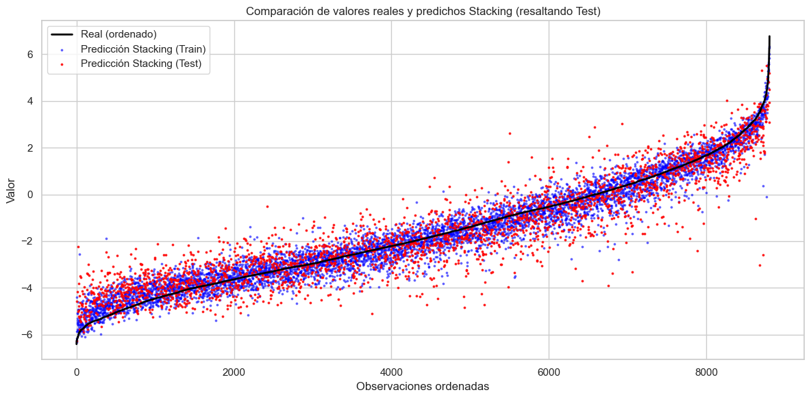
# Ordenar
orden = np.argsort(y)
y_real_ordenado = y[orden]
y_pred_correspondiente = y_pred_stacking_todos[orden]
# Crear máscara booleana para test
es_test = np.isin(y_real_ordenado, y_test)
# Predicciones sobre Train
plt.figure(figsize=(12, 5))
plt.plot(y_real_ordenado, label='Real (ordenado)', color='black', linewidth=2)
plt.scatter(np.where(~es_test)[0], y_pred_correspondiente[~es_test],
label='Predicción Stacking (Train)', color='blue', s=10, alpha=0.5)
plt.title('Predicción vs Real - SOLO TRAIN')
plt.xlabel('Observaciones ordenadas')
plt.ylabel('Valor')
plt.legend()
plt.grid(True)
plt.tight_layout()
plt.show()
# Predicciones sobre Test
plt.figure(figsize=(12, 5))
plt.plot(y_real_ordenado, label='Real (ordenado)', color='black', linewidth=2)
plt.scatter(np.where(es_test)[0], y_pred_correspondiente[es_test],
label='Predicción Stacking (Test)', color='red', s=10, alpha=0.5)
plt.title('Predicción vs Real - SOLO TEST')
plt.xlabel('Observaciones ordenadas')
plt.ylabel('Valor')
plt.legend()
plt.grid(True)
plt.tight_layout()
plt.show()
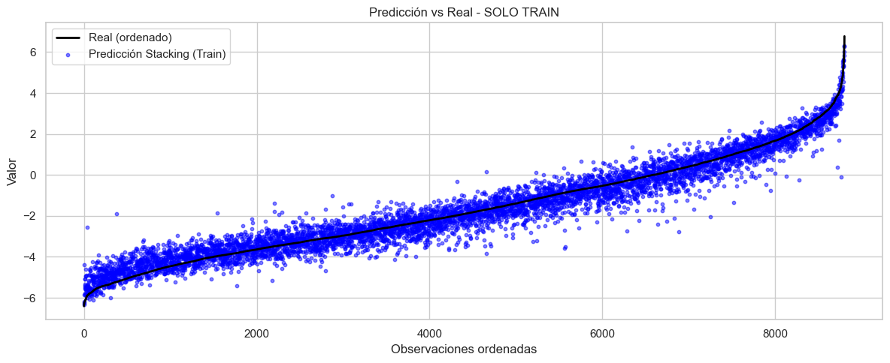
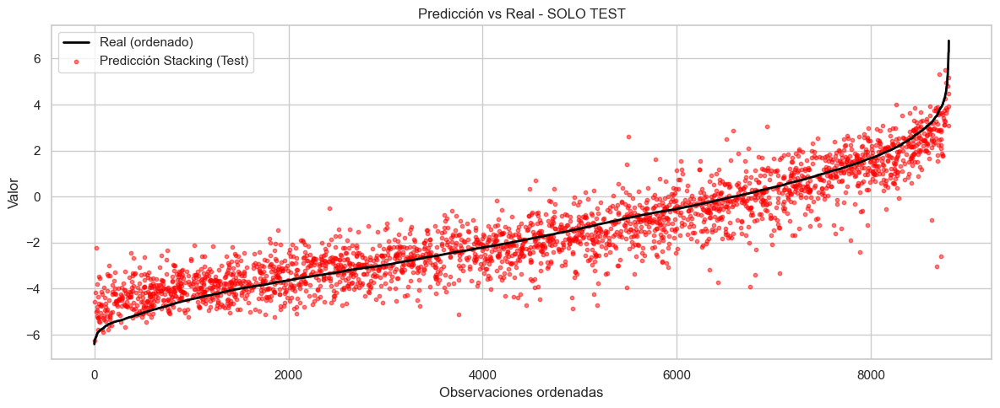
Tabla de métricas#
import pandas as pd
import numpy as np
from sklearn.metrics import mean_absolute_percentage_error, mean_squared_error, r2_score,mean_absolute_error
from scipy.stats import jarque_bera
from statsmodels.stats.diagnostic import acorr_ljungbox
epsilon = 1e-6 # Pequeño valor para evitar divisiones por cero
#MAPE
mape_knn = mean_absolute_percentage_error(np.maximum(y_test, epsilon), y_pred_knn) * 100
mape_regl = mean_absolute_percentage_error(np.maximum(y_test, epsilon), y_pred_reglineal) * 100
mape_ridge = mean_absolute_percentage_error(np.maximum(y_test, epsilon), y_pred_Ridge) * 100
mape_lasso = mean_absolute_percentage_error(np.maximum(y_test, epsilon), y_pred_Lasso) * 100
mape_rand = mean_absolute_percentage_error(np.maximum(y_test, epsilon), y_pred_RAND) * 100
mape_xgb = mean_absolute_percentage_error(np.maximum(y_test, epsilon), y_pred_XGB) * 100
mape_svm = mean_absolute_percentage_error(np.maximum(y_test, epsilon), y_pred_SVM) * 100
mape_stacking = mean_absolute_percentage_error(np.maximum(y_test, epsilon), y_test_pred_stacking) * 100
#MAE
mae_knn = mean_absolute_error(y_test, y_pred_knn)
mae_regl = mean_absolute_error(y_test, y_pred_reglineal)
mae_ridge = mean_absolute_error(y_test, y_pred_Ridge)
mae_lasso = mean_absolute_error(y_test, y_pred_Lasso)
mae_rand = mean_absolute_error(y_test, y_pred_RAND)
mae_xgb = mean_absolute_error(y_test, y_pred_XGB)
mae_svm = mean_absolute_error(y_test, y_pred_SVM)
mae_stacking = mean_absolute_error(y_test, y_test_pred_stacking)
#RMSE
rmse_knn = np.sqrt(mean_squared_error(y_test, y_pred_knn)) # RMSE
rmse_regl = np.sqrt(mean_squared_error(y_test, y_pred_reglineal))
rmse_ridge = np.sqrt(mean_squared_error(y_test, y_pred_Ridge))
rmse_lasso = np.sqrt(mean_squared_error(y_test, y_pred_Lasso))
rmse_rand = np.sqrt(mean_squared_error(y_test, y_pred_RAND))
rmse_xgb = np.sqrt(mean_squared_error(y_test, y_pred_XGB))
rmse_svm = np.sqrt(mean_squared_error(y_test, y_pred_SVM))
rmse_stacking = np.sqrt(mean_squared_error(y_test, y_test_pred_stacking))
#R2
r2_knn = r2_score(y_test, y_pred_knn) # R²
r2_regl = r2_score(y_test, y_pred_reglineal) # R²
r2_ridge = r2_score(y_test, y_pred_Ridge) # R²
r2_lasso = r2_score(y_test, y_pred_Lasso) # R²
r2_rand = r2_score(y_test, y_pred_RAND) # R²
r2_xgb = r2_score(y_test, y_pred_XGB)
r2_svm = r2_score(y_test, y_pred_SVM) # R²
r2_stacking = r2_score(y_test, y_test_pred_stacking) # R²
# Calcular Ljung-Box (test de autocorrelación de residuos)
residuos_knn = y_test - y_pred_knn
ljung_box_knn = acorr_ljungbox(residuos_knn, lags=1, return_df=True)['lb_pvalue'].iloc[0] # p-value
residuos_regl = y_test - y_pred_reglineal
ljung_box_regl = acorr_ljungbox(residuos_regl, lags=1, return_df=True)['lb_pvalue'].iloc[0] # p-value
residuos_ridge = y_test - y_pred_Ridge
ljung_box_ridge = acorr_ljungbox(residuos_ridge, lags=1, return_df=True)['lb_pvalue'].iloc[0] # p-value
residuos_lasso = y_test - y_pred_Lasso
ljung_box_lasso = acorr_ljungbox(residuos_lasso, lags=1, return_df=True)['lb_pvalue'].iloc[0] # p-value
residuos_rand = y_test - y_pred_RAND
ljung_box_rand = acorr_ljungbox(residuos_rand, lags=1, return_df=True)['lb_pvalue'].iloc[0] # p-value
residuos_xgb = y_test - y_pred_XGB
ljung_box_xgb = acorr_ljungbox(residuos_xgb, lags=1, return_df=True)['lb_pvalue'].iloc[0] # p-value
residuos_svm = y_test - y_pred_SVM
ljung_box_svm = acorr_ljungbox(residuos_svm, lags=1, return_df=True)['lb_pvalue'].iloc[0] # p-value
residuos_stacking = y_test - y_test_pred_stacking
ljung_box_stacking = acorr_ljungbox(residuos_stacking, lags=1, return_df=True)['lb_pvalue'].iloc[0] # p-value
# Calcular Jarque-Bera (test de normalidad de residuos)
jb_test_knn = jarque_bera(residuos_knn)
jarque_bera_knn = jb_test_knn.pvalue # p-value
jb_test_regl = jarque_bera(residuos_regl)
jarque_bera_regl = jb_test_regl.pvalue
jb_test_ridge = jarque_bera(residuos_ridge)
jarque_bera_ridge = jb_test_ridge.pvalue
jb_test_lasso = jarque_bera(residuos_lasso)
jarque_bera_lasso = jb_test_lasso.pvalue
jb_test_rand = jarque_bera(residuos_rand)
jarque_bera_rand = jb_test_rand.pvalue
jb_test_xgb = jarque_bera(residuos_xgb)
jarque_bera_xgb = jb_test_xgb.pvalue
jb_test_svm = jarque_bera(residuos_svm)
jarque_bera_svm = jb_test_svm.pvalue
jb_test_stacking = jarque_bera(residuos_stacking)
jarque_bera_stacking = jb_test_stacking.pvalue
tabla_resultados = pd.DataFrame({
'Modelo': ['K-NN','Regresión Lineal','Regresión Ridge','Regresión Lasso','Random Forest','XGBoost','SVM','Stacking'],
'MAE': [mae_knn, mae_regl, mae_ridge, mae_lasso, mae_rand, mae_xgb, mae_svm,mae_stacking],
'RMSE': [rmse_knn, rmse_regl, rmse_ridge, rmse_lasso, rmse_rand, rmse_xgb, rmse_svm,rmse_stacking],
'R²': [r2_knn, r2_regl, r2_ridge, r2_lasso, r2_rand, r2_xgb, r2_svm,r2_stacking],
'Ljung-Box p-value': [ljung_box_knn, ljung_box_regl, ljung_box_ridge, ljung_box_lasso, ljung_box_rand, ljung_box_xgb, ljung_box_svm,ljung_box_stacking],
'Jarque-Bera p-value': [jarque_bera_knn, jarque_bera_regl, jarque_bera_ridge, jarque_bera_lasso, jarque_bera_rand, jarque_bera_xgb, jarque_bera_svm,jarque_bera_stacking]
})
tabla_resultados
| Modelo | MAE | RMSE | R² | Ljung-Box p-value | Jarque-Bera p-value | |
|---|---|---|---|---|---|---|
| 0 | K-NN | 1.097396 | 1.424008 | 0.638177 | 0.864952 | 1.897277e-47 |
| 1 | Regresión Lineal | 1.274096 | 1.600522 | 0.542918 | 0.801962 | 1.085169e-17 |
| 2 | Regresión Ridge | 1.276635 | 1.600778 | 0.542772 | 0.869036 | 3.907231e-17 |
| 3 | Regresión Lasso | 1.277746 | 1.601887 | 0.542138 | 0.881267 | 5.092686e-17 |
| 4 | Random Forest | 0.799608 | 1.037215 | 0.808041 | 0.764102 | 1.156261e-83 |
| 5 | XGBoost | 0.681642 | 0.905405 | 0.853729 | 0.887565 | 5.653030e-253 |
| 6 | SVM | 1.017541 | 1.346059 | 0.676705 | 0.434834 | 3.489169e-121 |
| 7 | Stacking | 0.675076 | 0.901010 | 0.855146 | 0.763478 | 1.444107e-259 |
from statsmodels.graphics.tsaplots import plot_acf
modelos = {
"K-NN": residuos_knn,
"Regresión Lineal": residuos_regl,
"Regresión Ridge": residuos_ridge,
"Regresión Lasso": residuos_lasso,
"Random Forest": residuos_rand,
"XGBoost": residuos_xgb,
"SVM": residuos_svm
}
fig, axes = plt.subplots(len(modelos), 2, figsize=(15, 2.5 * len(modelos)))
for i, (nombre, residuos) in enumerate(modelos.items()):
# ACF de los residuos
plot_acf(residuos, ax=axes[i, 0], title=f"ACF - {nombre}")
axes[i,0].set_ylim(-0.2, 0.2) # Límite en el eje y
# Histograma de los residuos
sns.histplot(residuos, bins=20, kde=True, ax=axes[i, 1])
axes[i, 1].set_title(f"Histograma de Residuos - {nombre}")
plt.tight_layout()
plt.show()
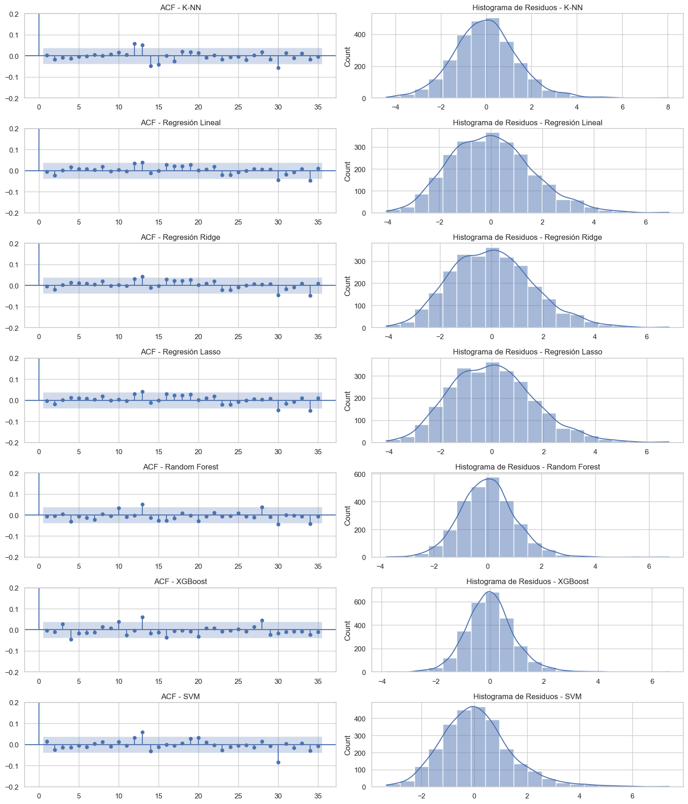
residuos_knn_total = y-y_pred_knn_todos
residuos_regl_total = y-y_pred_reglineal_todos
residuos_ridge_total = y-y_pred_Ridge_todos
residuos_lasso_total = y-y_pred_Lasso_todos
residuos_rand_total = y-y_pred_RAND_todos
residuos_xgb_total = y-y_pred_XGB_todos
residuos_svm_total = y-y_pred_SVM_todos
residuos_stacking_total = y-y_pred_stacking_todos
residuos_total = pd.DataFrame({
'K-NN': residuos_knn_total,
'Regresión Lineal': residuos_regl_total,
'Regresión Ridge': residuos_ridge_total,
'Regresión Lasso': residuos_lasso_total,
'Random Forest': residuos_rand_total,
'XGBoost': residuos_xgb_total,
'SVM': residuos_svm_total,
'Stacking': residuos_stacking_total
})
residuos_reales_largo = residuos_total.melt(var_name='Modelo', value_name='Residuos')
sns.set(style="whitegrid")
plt.figure(figsize=(12, 6))
sns.boxplot(x='Modelo', y='Residuos', data=residuos_reales_largo, palette="Set2")
plt.title('Distribución de Residuos por Modelo (CONJUNTO TOTAL)', fontsize=14)
plt.xlabel('Modelo')
plt.ylabel('Residuos')
plt.xticks(rotation=45)
plt.tight_layout()
plt.show()
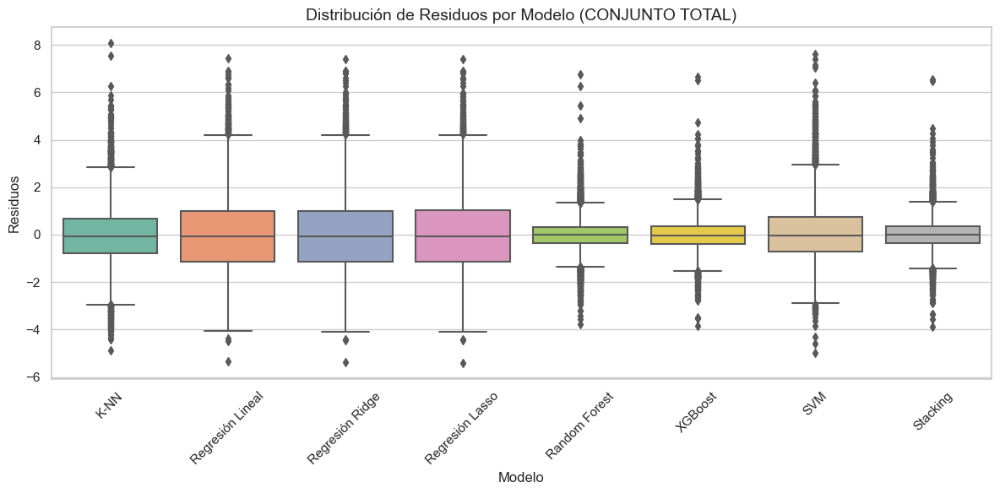
import plotly.express as px
fig = px.box(
residuos_reales_largo,
x='Modelo',
y='Residuos',
color='Modelo',
title='Distribución de Residuos por Modelo (CONJUNTO TOTAL)',
template='plotly_white',
width=1000,
height=600
)
fig.update_layout(
xaxis_title='Modelo',
yaxis_title='Residuos',
showlegend=False,
margin=dict(t=60)
)
fig.show()
residuos_total.describe().T
| count | mean | std | min | 25% | 50% | 75% | max | |
|---|---|---|---|---|---|---|---|---|
| K-NN | 8805.0 | -0.024702 | 1.224457 | -4.868551 | -0.775286 | -0.056825 | 0.673246 | 8.062013 |
| Regresión Lineal | 8805.0 | 0.008073 | 1.582771 | -5.319551 | -1.130854 | -0.082943 | 1.005881 | 7.416101 |
| Regresión Ridge | 8805.0 | 0.008237 | 1.584288 | -5.378049 | -1.122741 | -0.071996 | 1.010863 | 7.389235 |
| Regresión Lasso | 8805.0 | 0.008410 | 1.585925 | -5.409216 | -1.124169 | -0.067929 | 1.014171 | 7.388337 |
| Random Forest | 8805.0 | -0.001874 | 0.692488 | -3.779593 | -0.351866 | -0.016433 | 0.323312 | 6.747373 |
| XGBoost | 8805.0 | 0.003868 | 0.679614 | -3.839861 | -0.393510 | -0.020978 | 0.364450 | 6.637334 |
| SVM | 8805.0 | 0.088868 | 1.278203 | -4.979283 | -0.724102 | -0.020243 | 0.744674 | 7.623925 |
| Stacking | 8805.0 | 0.006397 | 0.656210 | -3.873480 | -0.361693 | -0.015672 | 0.343560 | 6.546695 |
print(np.exp(3))
print(np.exp(3-2))
print(np.exp(3)-np.exp(2))
20.085536923187668
2.718281828459045
12.696480824257018
# 1. Orden
orden = np.argsort(y)
y_real_ordenado = y[orden]
y_pred_correspondiente = y_pred_stacking_todos[orden]
# 2. Gráfica
plt.figure(figsize=(12, 6))
plt.plot(y_real_ordenado, label='Real (ordenado)', color='black', linewidth=2)
plt.scatter(range(len(y_pred_correspondiente)), y_pred_correspondiente,
label='Predicción', color='blue', s=10, alpha=0.5)
plt.title('Comparación de valores reales y predichos (con scatter)')
plt.xlabel('Observaciones ordenadas')
plt.ylabel('Valor')
plt.legend()
plt.grid(True)
plt.tight_layout()
plt.show()
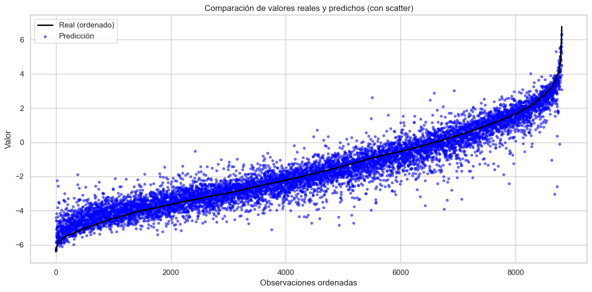
import plotly.graph_objects as go
import numpy as np
orden = np.argsort(y)
y_real_orden = y[orden]
y_real_ordenado = np.exp(y_real_orden)
y_pred_correspondiente = np.exp(y_pred_stacking_todos[orden])
# Crear figura interactiva
fig = go.Figure()
# Línea de valores reales ordenados
fig.add_trace(go.Scatter(
y=y_real_ordenado,
mode='lines',
name='Real (ordenado)',
line=dict(color='black', width=2)
))
# Puntos de predicciones correspondientes
fig.add_trace(go.Scatter(
y=y_pred_correspondiente,
mode='markers',
name='Predicción',
marker=dict(color='blue', size=4, opacity=0.5)
))
# Configuración del layout
fig.update_layout(
title='Comparación de valores reales y predichos (interactivo)',
xaxis_title='Observaciones ordenadas',
yaxis_title='Valor',
xaxis=dict(range=[0, 8000]),
yaxis=dict(range=[0, 25]),
legend=dict(x=0.01, y=0.99),
height=600,
width=1000
)
# Mostrar
fig.show()